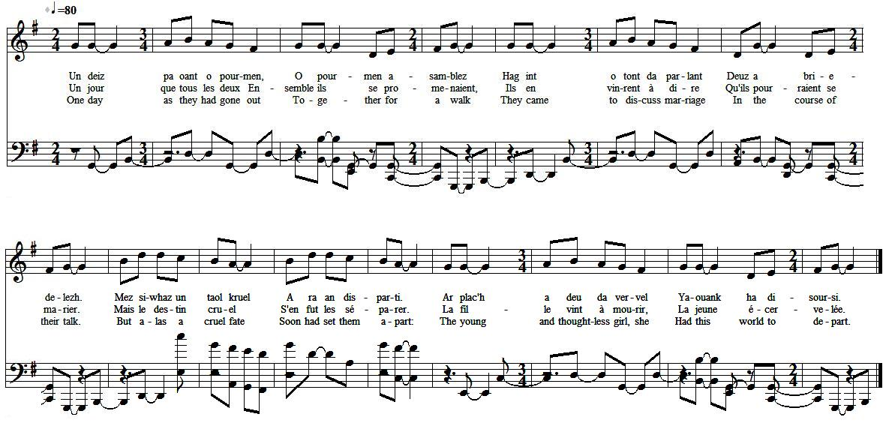

<


|
AN IVERN Un deiz pa oant o pourmen, O pourmen asamblez Hag int o tont da parlant Deuz a briedelezh. Mez siwhaz un taol kruel A ra an disparti. Ar plach a deu da vervel Yaouank ha disoursi. An den-mañ pen-eus klevet Oa marv e mestrez fidel En em lakaz er gouent E-mesk an dud santel. Hag ennañ pede Doue, Pede Doue noz ha deiz Evit ma welje choas e vestrez Evel pa voa en buhez. Un nozvezh e voa En e wele kousket mad Hag e teuas ur mesajer Evit dont he kerchat. - Petra roït-te din-me Ya en asurans? Me a roy dit gweled da vestrez Heb na drouk nag ofañs. Me zo ur paour-kaez Kabusin Nem-eus ket a voien Nemed ur batinenn archant Livet en aour melen Hag a roin-me did-de ya en asurans, Mar graes din gweled va mestrez Heb na drouk nag ofañs. Kregiñ a eure ennañ Neuze heb dale pell. Ha nijeal a re gantañ Dreist an tier uhel. Errujont en un alle Hag a oa hir meurbet, Hag er penn all anezhi Un nor vras houarnet. Dre an nerzh deus e gomzoù An nor a zigor promptamant Pelech edo e vestrez, En ur gador ardant! - Debonjour deoch va mestrez, Chwi ho-peus poan amañ. Seblantoud a ra din-me Emaoch e-kreiz an tan. - Ya sur va chervicher Poan vras a soufrañ amañ. An tan dimeus an ivern Ne ses dam devourañ. Chwi rey va gourchemennoù Dam char zo er gêr chomet Hag e leverot dezhe Bezañ fur ha parfet. Transcription KLT: Chr.Souchon (c) 2009 |
L'ENFER Un jour que tous les deux Ensemble ils se promenaient, Ils en vinrent à dire Quils pourraient se marier. Mais le destin cruel Sen fut les séparer. La fille vint à mourir, La jeune écervelée. Le jeune homme apprenant La mort de sa douce amie, Entra dans un couvent Afin dy vivre parmi Les moines; au bon Dieu Demandant jour et nuit, De voir son amie comme Quand elle était en vie. Une nuit reposant Sur son grabat endormi, Il vit un émissaire Sapprocher qui lui dit : - De quelle récompense, Pourrais-tu massurer, Pour revoir ta maîtresse Sans courir de danger ? Je suis un capucin Aux moyens fort limités : Ma patène dargent Au beau liseré doré : Sera ta récompense, Je peux te lassurer, Si je vois ma maîtresse Sans courir de danger. Sans plus attendre, alors Son compagnon le saisit Et par-dessus les toits Ils senvolent dans la nuit. Lallée quils atteignent Les mène tout droit vers Un endroit sinistre : Une porte bardée de fer. Ses mots forcent la porte A sentrouvrir promptement. La fille était assise Sur un siège ardent ! - Bonjour à vous, amie, Quels terribles tourments Que les vôtres il me semble, Dans ce feu brûlant ! - Ce sont des maux atroces Que je je dois endurer. Lenfer sans cesse attise Ses feux pour me brûler. Portez donc la consigne A mes frères et soeurs Dites-leur dêtre sages Et parfaits dans leurs curs. Trad. Christian Souchon (c) 2009 |
HELL One day as they had gone out Together for a walk They came to discuss marriage In the course of their talk. But alas a cruel fate Soon had set them apart: The young and thoughtless girl, she Had this world to depart. The young lad when he heard that His dear girl friend was dead, Has gone to an abbey and With holy monks he stayed. And there he prayed to God, Prayed to God, day and night, He might see his girl once more As when she was alive. One night he was asleep And he lay upon his bed, When, coming to collect him A messenger has said: - What would you give to me By way of guarantee, If free of risk or trespass, Your mistress you could see? I am but a Capuchin And not a man of means: Beside a silver paten Gold-rimmed, my wealth is lean. Yet, Ill give it to you By way of guarantee If free of risk or trespass My mistress I can see. The other grasped him strongly Wanting no further proofs And off the both of them flew, High up over the roofs. They came to an alley That was immensely broad And at the other end of It an iron door stood. The door quickly turned open Obeying his words rule. There was the poor mans girl sea- -ted on a flaming stool! - Good day, to you, my lass, You suffer here dire pains, If, as it appears to me, Youre surrounded with flames. - Yes, I do, my dear suiter, These are great sufferings. Flames that hell kindles never Cease to be devouring. My recommendations To all my kin convey: They should refrain from disor- -der and from levity! Transl. Christian Souchon (c) 2009 |